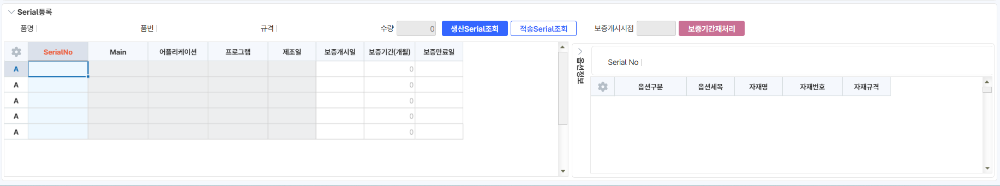

26.01.14 반품거래명세서입력
1. [조회조건] 유통구조 DIS 항목추가
- 거래명세서품목조회에서 반품거래명세서로 jump 시 유통구조 자동 반영. DIS;처리
UMChannelName UMChannel
2. [조회조건] CRM생성, CRM주소
- 거래명세서품목조회에서 반품거래명세서로 jump 시 CRM정보 자동 반영
IsCRMLink CRMOrderKey
3. [시트] 사업구분, 납품지역, 지역담당자 컬럼 추가
- 거래명세서품목조회에서 반품거래명세서로 jump 시 납품지역, 지역담당자 자동반영. DIS;처리
UMDVRegionName UMDVRegion RegionEmpName RegionEmpSeq
4. 옵션대상, Serial대상, Serial출력, Serial수량 컬럼 추가
- 옵션대상: 품명이 옵션 지정 품목인 경우 체크됩니다. (svs_TPDSerialBase, svs_TPDSerialExcp 테이블에 '옵션관리'에 체크된 경우)
이벤트-체크 시 배경 색 표기 '#FFF9C4'
- Serial대상: 품명이 시리얼 지정 품목인 경우 체크됩니다. (svs_TPDSerialBase, svs_TPDSerialExcp 테이블에 'Serial관리' 체크된 경우)
이벤트-체크 시 배경 색 표기 '#FFF9C4'
- S/N출력: 사용자 자동기입. 별다른 이벤트 없음. 비고와 동일
- Serial수량: Serial등록된 개수를 확인 '_TLGInOutSerialSub' 테이블 확인하여 수량 정보 표기.
이벤트- 이동수량과 동일하지 않은 경우 색상 표시(배경): '#FF8282'
- Serial대상에 해당하지 않는 경우 Serial수량에 따른 이벤트는 발생하지않음
SVS_Clear_Serial SVS_SS1ColorAll
IsOption IsSerial SerialPrint SerialNoQty
5.Serial등록, 옵션정보 시트(2시트, 3시트 추가)
- Serial입고 처리 필요
-Serial코드도움 선택 시 '거래명세서, 수출invoice' Serial코드도움이 아닌 품목의 Serial Master가 조회될 수 있도록 개발요청

(Serial등록 화면에 serial출고조회 버튼 추가)

출처: \<https://call.sysware.co.kr/Page/Open/100659/100101/0/18820244>